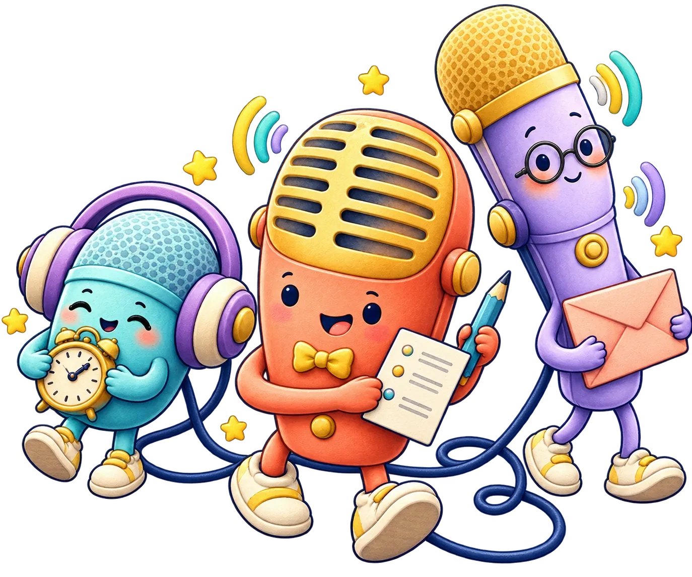
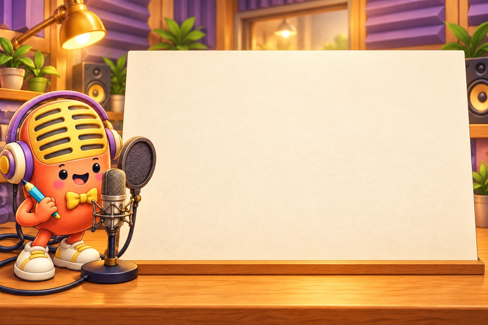
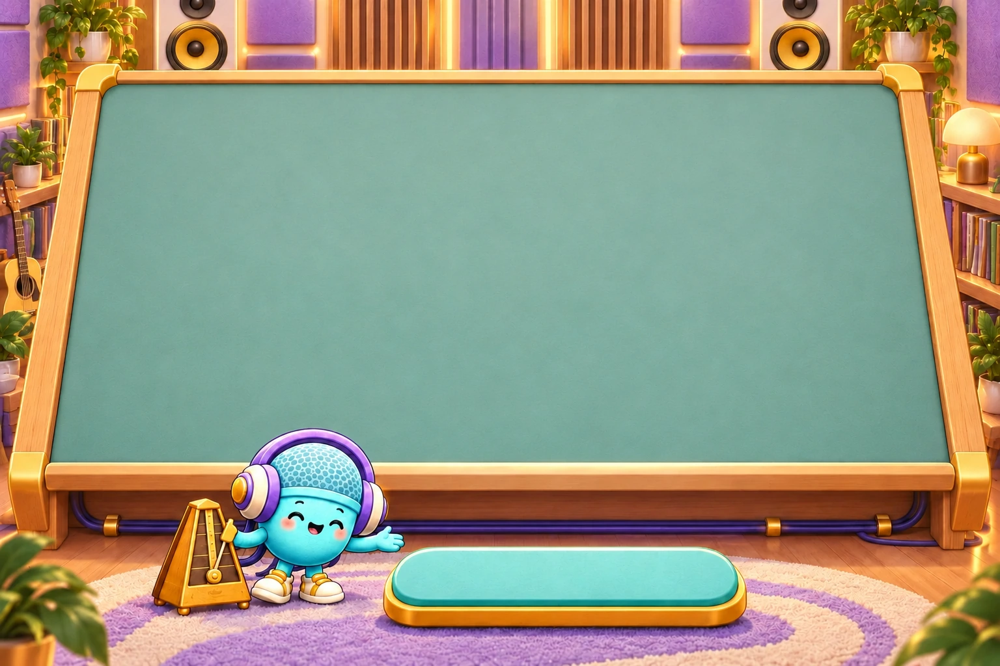
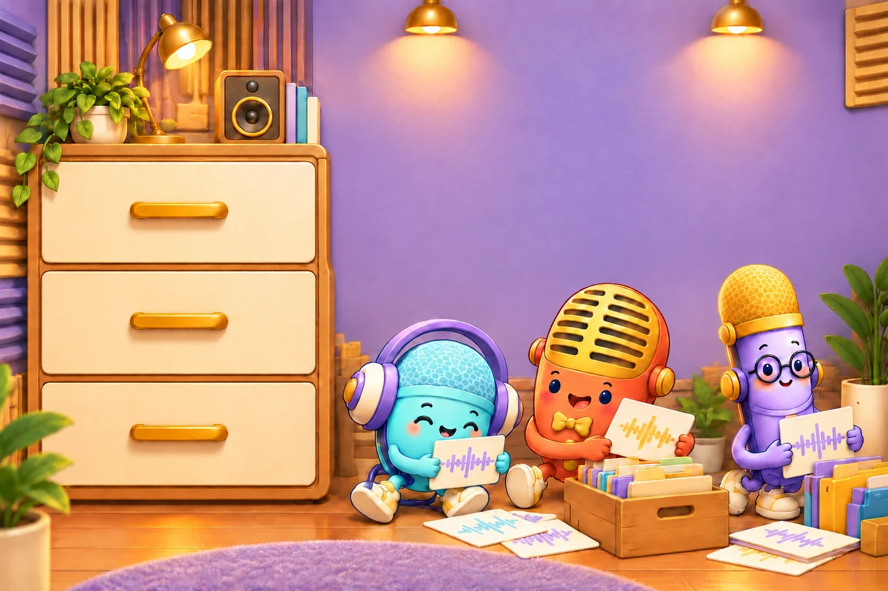

這次要製作的聽力試卷聲音還在準備中

只存在這台裝置每完成一站，夥伴就會亮起來。隱私與資料說明 ↗
麥麥的錄題桌
MADE BY TEACHER
今天，來製作一份聽力測驗。
0%

PROLOGUE
01測驗開場錄音
先錄下中英文說明與開始提醒，帶學生進入測驗。
麥麥提醒你 連續錄音時，說完停頓後會保存；倒數結束再錄下一段。

02 / THE RHYTHM DESK
替每一道題，留好思考的時間。
設定一次，整份聽力測驗都會依照你的節奏播放。
1 / 8
按下確認，收好這份試卷的留白與重播設定。
整份聽力測驗，會這樣播放
開場段落依自訂順序各播放一次，開始與結束提醒也各一次。大題引導語會跟著大題重播。

THE AUDIO ARCHIVE
資料庫
已匯出的音檔與可編輯專案，收好在這裡。
這些都存在這台裝置；要換裝置接著做，用首頁的「雲端專案」或「下載專案檔」。共用電腦用完請清除這台裝置的資料 ↗